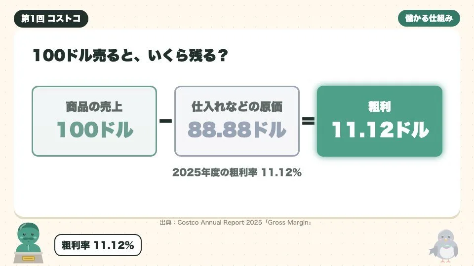
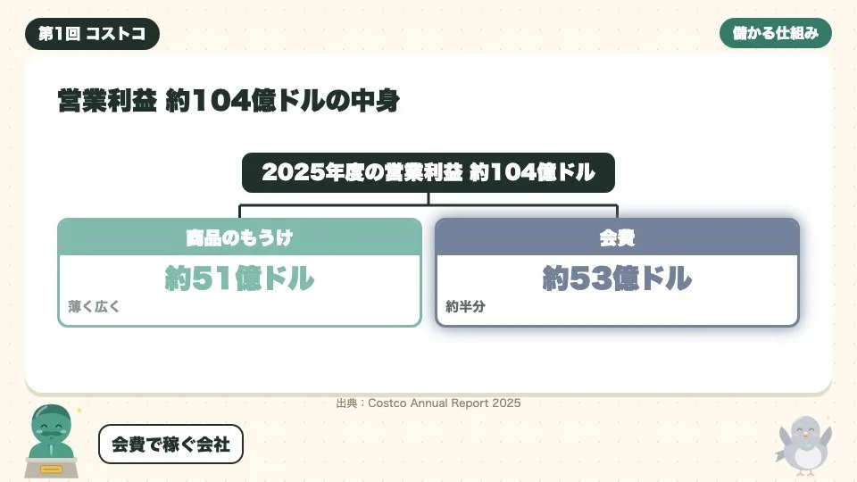
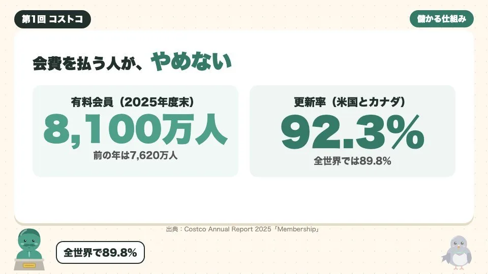
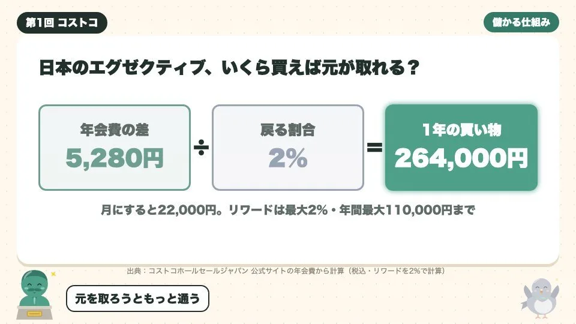
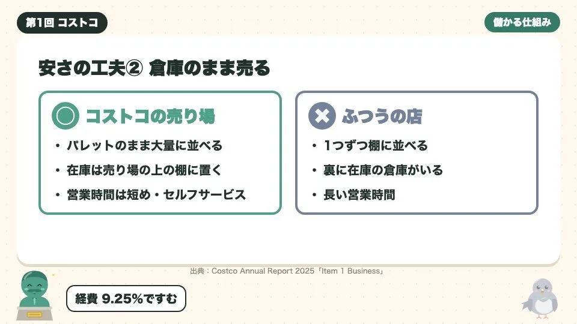
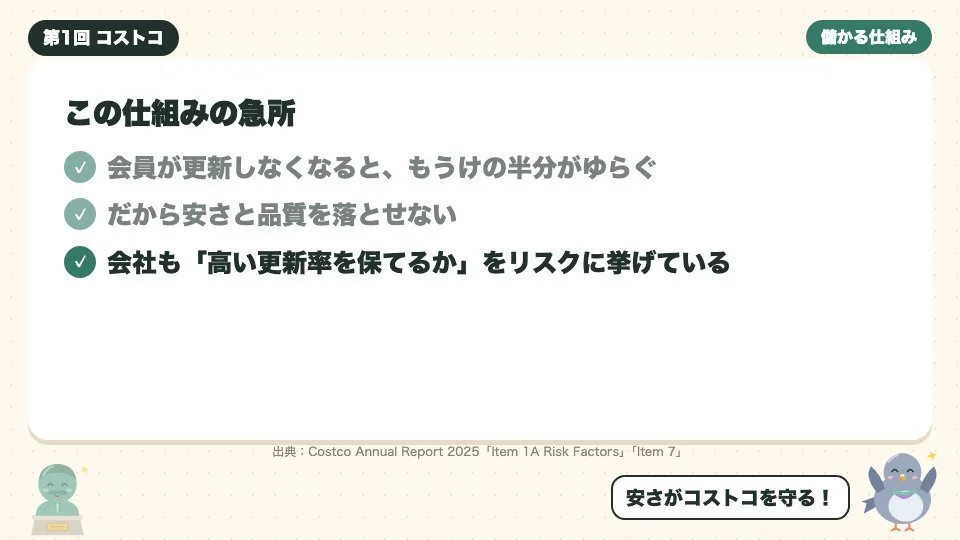

コストコが安いのに儲かるのは、もうけの約半分を、商品ではなく「会費」で稼いでいるからです。2025年度（2025年8月31日までの1年間）の営業利益は約104億ドル。そのうち約53億ドルが会費の収入でした。この記事では、会社が毎年出している年次報告書の数字で、そのしくみを順に見ていきます。数字は2026年11月20日時点で確認したもので、金額は米ドルのまま載せています。
 ▶ この記事の内容を動画で見る（ビジネス解体新書）
▶ この記事の内容を動画で見る（ビジネス解体新書）
01商品のもうけは、100ドル売って1.87ドル

まず、商品でどれだけもうけているかです。コストコが商品を100ドル売ると、仕入れなどの原価が88.88ドルかかります。売上から原価を引いた残りを「粗利」といいます。2025年度の粗利率は11.12%でした。
ここから人件費などの経費を引きます。経費は売上100ドルあたり9.25ドル。残るのは1.87ドルです。
| 売上100ドルあたり（2025年度） | 金額 |
|---|---|
| 商品の売上 | 100ドル |
| 仕入れなどの原価 | 88.88ドル |
| 粗利（売上−原価） | 11.12ドル |
| 人件費などの経費 | 9.25ドル |
| 商品のもうけ（粗利−経費） | 1.87ドル |
同じ小売のウォルマートとくらべると、うすさが分かります。ウォルマートの粗利率は24.1%、売上に対する経費の割合は20.7%です（2025年1月31日までの年度）。コストコの粗利率は、その半分より少ない水準です。かわりに経費も小さくおさえています。
02営業利益の約半分は会費

営業利益とは、本業で残ったもうけのことです。2025年度の数字を、会社全体で見ます。
| 項目（2025年度） | 金額 |
|---|---|
| 商品の売上 | 約2,699億ドル |
| 商品を売って残るもうけ | 約51億ドル |
| 会費の収入 | 約53億ドル |
| 営業利益（上の2つの合計） | 約104億ドル |
商品を約2,699億ドル売っても、原価と経費を引くと、残るのは約51億ドルです。これに対して会費の収入は約53億ドル。会費のほうが多くなっています。
会費は、商品の売上と会費を合わせた収入の約2%にすぎません。その約2%が、営業利益の約半分を生んでいます。もし会費がなければ、営業利益は約104億ドルから約51億ドルになる計算です。
03会費が積み上がる理由は、人数と更新率

会費だけでこれほど稼げる理由は2つあります。
1つ目は人数です。2025年度末の有料会員は8,100万人。前の年度の7,620万人から増えました。有料会員には家族カードが1枚無料でつき、こちらが6,420万人ぶんあります。合わせると、カードを持つ人は1億4,520万人です。日本の人口（約1億2,300万人）より多い数です。
2つ目は、会員がやめないことです。更新率とは、会員が次の年も会費を払った割合のこと。2025年度末の更新率は、米国とカナダで92.3%、全世界で89.8%でした。米国とカナダでは2024年9月1日から年会費を引き上げています。
その結果、会費の収入は2024年度の約48億ドルから、2025年度は約53億ドルへ10%増えました。
流れをまとめると、次の輪になります。
- 商品を限界まで安くする
- 会員になりたい人が増える
- 会費が積み上がる
- 安さに満足した会員が、次の年も更新する
安さは、会員を集めるための道具になっています。
04年会費と、エグゼクティブ会員の元が取れる金額

年会費は次のとおりです（2026年11月20日時点で確認）。
| 会員の種類 | 米国 | 日本（税込） |
|---|---|---|
| ゴールドスター／ビジネス | 65ドル | 5,280円 |
| エグゼクティブ | 130ドル | 10,560円 |
エグゼクティブは、年会費が高いかわりに、買い物に応じてリワード（買った金額の一部が戻るしくみ）がつく会員です。日本では年間購入金額の最大2%で、付与は年間最大110,000円です。
全世界のエグゼクティブ会員は3,870万人で、有料会員の半分近くにあたります。2025年度は、全世界の売上の約73.6%がエグゼクティブ会員の買い物でした。
日本で、いくら買えば年会費の差が戻るかを計算します。
- 年会費の差10,560円 − 5,280円 ＝ 5,280円
- 対象の買い物の2%が戻るとすると5,280円 ÷ 2% ＝ 264,000円
対象の買い物が1年に264,000円、月にすると22,000円あれば、年会費の差が戻る計算です。
注意264,000円は「リワードの対象になる買い物の金額」です。レジで払う金額と同じとは限りません。対象になる金額の数え方や対象外の商品は、公式の規約で確認してください。
05安さを続ける4つの工夫

うすいもうけでも安さを続けられるのは、費用を下げる工夫があるからです。年次報告書に書かれている内容を4つにまとめます。
- 商品をしぼる。 1つの倉庫店が扱う商品の種類は4,000未満です。よく売れる型やサイズにしぼり、まとめ売りだけの商品も多くあります。種類をしぼるので、1つの商品を大量に仕入れられます。
- 倉庫のまま売る。 商品はパレットのまま大量に並べ、在庫は売り場の上の棚に置きます。並べる人手が減ります。営業時間も多くの小売より短めです。出入口の管理と会員制によって、商品がなくなるロスは一般の小売よりかなり少ないと会社は考えています。
- まっすぐ運ぶ。 商品の大半をメーカーから直接買います。デポ（積み替えの拠点）で大量に受けて、すぐ倉庫店へ出します。何段階もはさむ流通より費用が下がると会社は書いています。
- 売ってから払う。 代金を支払う期限より前に、商品が売れることが多いと会社は書いています。
けずっているのは売り場の手間で、人ではありません。米国とカナダでは2025年3月に、入ったばかりの職の時給を20ドル以上に引き上げました。米国の時給従業員の平均は、2025年度末で約32ドルです。人件費と福利厚生は、仕入れ原価の次に大きい費用です。
来店を増やす仕掛けもあります。ガソリンスタンドは2025年度末で747か所あり、ガソリンは売上の約10%を占めます。会社は、ガソリンや薬局、フードコートなどが来店の回数を増やすと書いています。2025年度の来店頻度は5%増えました。
自社ブランドの「カークランドシグネチャー」も柱のひとつです。ナショナルブランドより総じて安く、それでいて利益率は総じて高いと会社は説明しています。売上に占める割合を上げていく方針です。
06弱点は、会員が更新しなくなること

このしくみには急所があります。会員が更新しなくなると、もうけの約半分がゆらぐことです。会社自身も、会員の基盤を広げ、高い更新率を保てるかが利益を大きく左右すると書いています。だから、安さと品質を落とせません。
店は増え続けています。倉庫店は2025年8月31日時点で全世界に914。うち米国が629、カナダが110、メキシコが42、日本が37です。2025年度は27店（移転3を含む）を開きました。2026年度は最大35店（移転5を含む）を開く計画です。
07まとめ
- 商品のもうけは、売上100ドルあたり1.87ドル（2025年度）
- 営業利益 約104億ドルの約半分が会費（約53億ドル）。米国とカナダの更新率は92.3%
- 商品をしぼる・倉庫のまま売る・まっすぐ運ぶ・売ってから払う。この4つの工夫で安さを続けている
- 会員が更新を続けるかどうかが、このしくみの急所
コストコにとって、安くし続けることは、会費という収入を守ることでもあります。